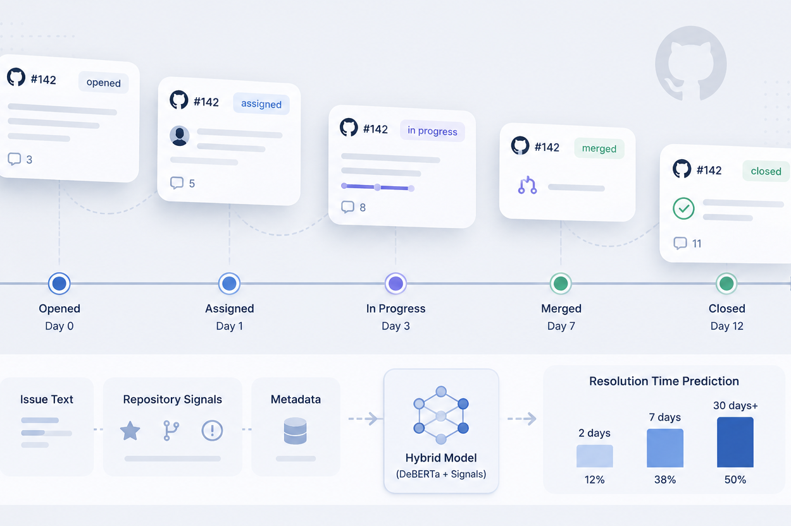
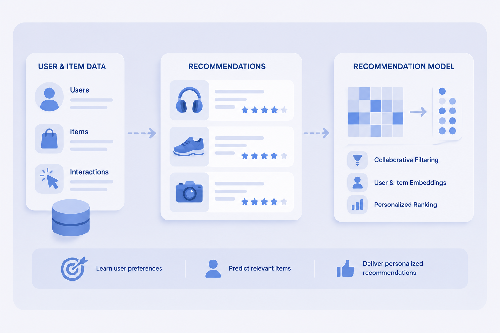

About
I am an M.S. student in Data Science at New York University. My interests lie in modeling large-scale human and socio-technical systems using statistical learning, machine learning, and simulation-based approaches. I am particularly interested in human mobility, reinforcement learning, and computational systems. I graduated from UCLA in 2025 with bachelor's degrees in Statistics & Data Science and Applied Mathematics.
Selected Projects

GitHub Issue Resolution Prediction
Predicting software issue resolution time using repository signals and language models. Combines textual features from issue descriptions with structured repository metadata via a hybrid modeling framework.
DeBERTa · temporal split · hybrid modeling · GitHub data

Scalable Recommendation Modeling with Distributed Data Pipelines
Building a large-scale recommendation workflow using distributed processing and collaborative filtering techniques for personalized ranking and user preference modeling.
Recommendation · Distributed processing · ASL
Writing Samples
Contact
I am open to research opportunities and collaborations related to mobility modeling, reinforcement learning, computational systems, and other aspects! Please feel free to reach out if you are interested in connecting or learning more about my work.
- Email yz8063@nyu.edu
- GitHub brucezhang1015
- LinkedIn LinkedIn